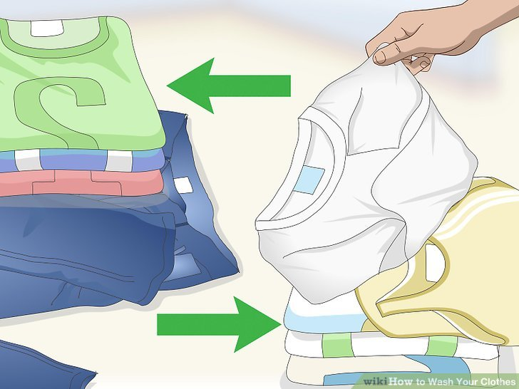

Folding Techniques That Save Closet and Drawer Space
Scientists have revealed the most efficient method for folding T-shirts, and, ta-da! We share it here, as shown in the dia...gram.The technique, described by robotics engineers at the University of California Berkeley, was a part of a research project that programmed robots how to folding clothing for maximum space-saving. While you may be tempted to hang your dress shirts, folding them so they can be stored neatly in drawers not only saves precious closet space, but it also prevents wrinkling. The latter is a big plus if you dread breaking out the ironing board. Make sure to button all the buttons, from top to bottom, before folding. Doing so will ensure a neat and tidy fold that stays wrinkle-free. Any KonMari fan will tell you not to tuck one sock into the other after the pair is rolled into a ball—unless you like stretched out socks. Instead, long socks should be folded into thirds or rolled into a ball. But what about short socks? They are not long enough to fold or roll. The diagram here shows how to fold socks like these without resorting to the old sock-tucking trick. Bulky, heavy sweaters such as the one shown here should never be hung on a hanger. To prevent sweaters like these from getting droopy and stretched out of shape, neatly fold as shown. Afterward, store them on a closet shelf or in a dresser drawer. While you may be thinking, who the heck folds underwear, consider this: Keeping your skivvies neatly organized, as you see here, will make it easier to find the pair you want to wear without messing up the underwear drawer. Even better, it saves precious drawer space.
Clothes washing techniques

Sort your clothes into piles. When washing clothes, there are two main things to keep in mind: what the color of the cl...othes are, and what material they are made out of. Not all fabrics can handle the same amount of water pressure or level of tumbling.
Separate light and dark-colored clothes. When you wash your clothes, especially new clothes, some of the dye used on the fabric will run out of the clothes (that's why older clothes have a more faded color than bright, new clothes.) Any clothes that are white, cream, or a light, pale pastel color, should go in the ‘whites’ pile, while all other colored clothes should go in the ‘dark’ pile. If you don’t separate, your new bright blue shirt might dye all of your white clothes blue.
Separate your clothes based on the fabrics they are made out of. Some fabrics, like denim or thick cloth (like a towel) need to be washed on a heavier wash cycle than your silky lingerie (which gets washed on a delicate setting). You should separate your clothes by the sort of wash cycle their fabrics are meant to be washed in.
Read the ‘care tag’ on your clothes. The cloth tags are not just sewn into clothes to make your neck itchy when they rub against your skin--they’re actually there to help guide you through the washing process. When in doubt about how to wash an item, check the tag. The care tags tell you what fabric the item is made of, how it should be washed, and how it should be dried.
Some clothes need to be dry cleaned or washed by hand The care tag will tell you if either of these things are necessary. Know what water temperature to select. Washing machines have different temperature settings because some fabrics and colors require different levels of heat to be washed thoroughly.
Use hot water for light colors, particularly light colors that are especially dirty. The heat will scald the stains right out of those white items.
Use cold water for dark colors, as cold water reduces the amount of dye that runs from these clothes (so your clothes won’t fade as fast when you use cold water.) Cotton items should also be washed in cold water as they are less likely to shrink in cold water. Know what size load to select. Most washing machines have a knob that you must turn to select the right size load for the amount of clothing you have (generally either small, medium or large.) If your clothes fill up one-third of the machine, you should select small. Two-thirds of the machine means you should select medium, and if you fill up the whole machine, you should select large.
Never squish clothes down so that you can fit more in. You should just run another load with your extra clothes or else you could risk jamming the machine or damaging it in some other way.
Know what washing cycle to select. As with temperature, washing machines also have different types of cycles, as different kinds of clothing require a different level of washing.[1]
Regular/Normal cycle: Select this when washing white clothes. It will leave your white items crisp and fresh.
Permanent press: Use this for your colored clothes. This cycle washes with warm water and ends with cooler water, which keeps your colors looking bright.
Delicate: As you might guess, anything that is relatively delicate (bras, dry-fit wear, cotton sweaters, dress shirts, etc.) Always make sure that your delicates do not require you to dry-clean or hand wash them (check the tag to make sure.) Add the right kind of washing fluid and close the door. Washing fluid includes detergent, bleach, and fabric softener. You can either add your clothes and pour the right washing fluid on them, or keep your clothes out of the washer, fill the washer ⅓ of the way with water, add the washing fluid, and then add the clothes.[2]
Detergent: The amount of detergent you put in your washing machine is determined by how large your load is. Generally, detergent lids act as cups that have marked off amounts. Generally, ⅓ of the cup should be filled with detergent for a small load, ⅔ for a medium load, and a full cup for a large load. However, read your specific detergent bottle for instructions on how to use that detergent--some detergents are more concentrated than others, meaning you don’t need to use as much.
Bleach: Bleach is used when you want to get tough stains out of clothes, or you want your whites to be really, really white. There are two kinds of bleach. Chlorine bleach is good for really making your whites white but should never be used on any colored fabric. All-fabric bleach can be used on colored fabrics.
Fabric softener: Fabric softener can be added during the rinse cycle. Some machines have a dispenser where you can pour the softener when you begin the wash cycle, and it will add it to the rinse cycle at the right time. Move your clothes to the dryer and select the right cycle. Keep in mind that there are some clothes that should be air dried. Check the tag--if it says not to dry it, hang these items somewhere they can dry. Like the washing machine, the dryer also has settings that you have to wade through to dry your clothes. Add a dryer sheet and close the door.[3]
Regular/heavy: White clothes are best dried on the regular/heavy setting. White clothes are generally pre-shrunk and can handle the more intense and higher heat drying system (unlike colors which fade under high heat.)
Permanent press: This is better for regular colored clothes. The medium heat and pressure makes sure that your clothes don’t fade.
Delicate: Any clothes that you washed on the delicate setting should be dried on the delicate setting. This setting uses close to room temperature air and slow cycle so that no damage comes to your delicates.
Know what water temperature to select. Washing machines have different temperature settings because some fabrics and colors require different levels of heat to be washed thoroughly.
Use hot water for light colors, particularly light colors that are especially dirty. The heat will scald the stains right out of those white items.
Use cold water for dark colors, as cold water reduces the amount of dye that runs from these clothes (so your clothes won’t fade as fast when you use cold water.) Cotton items should also be washed in cold water as they are less likely to shrink in cold water. Know what size load to select. Most washing machines have a knob that you must turn to select the right size load for the amount of clothing you have (generally either small, medium or large.) If your clothes fill up one-third of the machine, you should select small. Two-thirds of the machine means you should select medium, and if you fill up the whole machine, you should select large.
Never squish clothes down so that you can fit more in. You should just run another load with your extra clothes or else you could risk jamming the machine or damaging it in some other way.
Know what washing cycle to select. As with temperature, washing machines also have different types of cycles, as different kinds of clothing require a different level of washing.[1]
Regular/Normal cycle: Select this when washing white clothes. It will leave your white items crisp and fresh.
Permanent press: Use this for your colored clothes. This cycle washes with warm water and ends with cooler water, which keeps your colors looking bright.
Delicate: As you might guess, anything that is relatively delicate (bras, dry-fit wear, cotton sweaters, dress shirts, etc.) Always make sure that your delicates do not require you to dry-clean or hand wash them (check the tag to make sure.) Add the right kind of washing fluid and close the door. Washing fluid includes detergent, bleach, and fabric softener. You can either add your clothes and pour the right washing fluid on them, or keep your clothes out of the washer, fill the washer ⅓ of the way with water, add the washing fluid, and then add the clothes.[2]
Detergent: The amount of detergent you put in your washing machine is determined by how large your load is. Generally, detergent lids act as cups that have marked off amounts. Generally, ⅓ of the cup should be filled with detergent for a small load, ⅔ for a medium load, and a full cup for a large load. However, read your specific detergent bottle for instructions on how to use that detergent--some detergents are more concentrated than others, meaning you don’t need to use as much.
Bleach: Bleach is used when you want to get tough stains out of clothes, or you want your whites to be really, really white. There are two kinds of bleach. Chlorine bleach is good for really making your whites white but should never be used on any colored fabric. All-fabric bleach can be used on colored fabrics.
Fabric softener: Fabric softener can be added during the rinse cycle. Some machines have a dispenser where you can pour the softener when you begin the wash cycle, and it will add it to the rinse cycle at the right time. Move your clothes to the dryer and select the right cycle. Keep in mind that there are some clothes that should be air dried. Check the tag--if it says not to dry it, hang these items somewhere they can dry. Like the washing machine, the dryer also has settings that you have to wade through to dry your clothes. Add a dryer sheet and close the door.[3]
Regular/heavy: White clothes are best dried on the regular/heavy setting. White clothes are generally pre-shrunk and can handle the more intense and higher heat drying system (unlike colors which fade under high heat.)
Permanent press: This is better for regular colored clothes. The medium heat and pressure makes sure that your clothes don’t fade.
Delicate: Any clothes that you washed on the delicate setting should be dried on the delicate setting. This setting uses close to room temperature air and slow cycle so that no damage comes to your delicates.